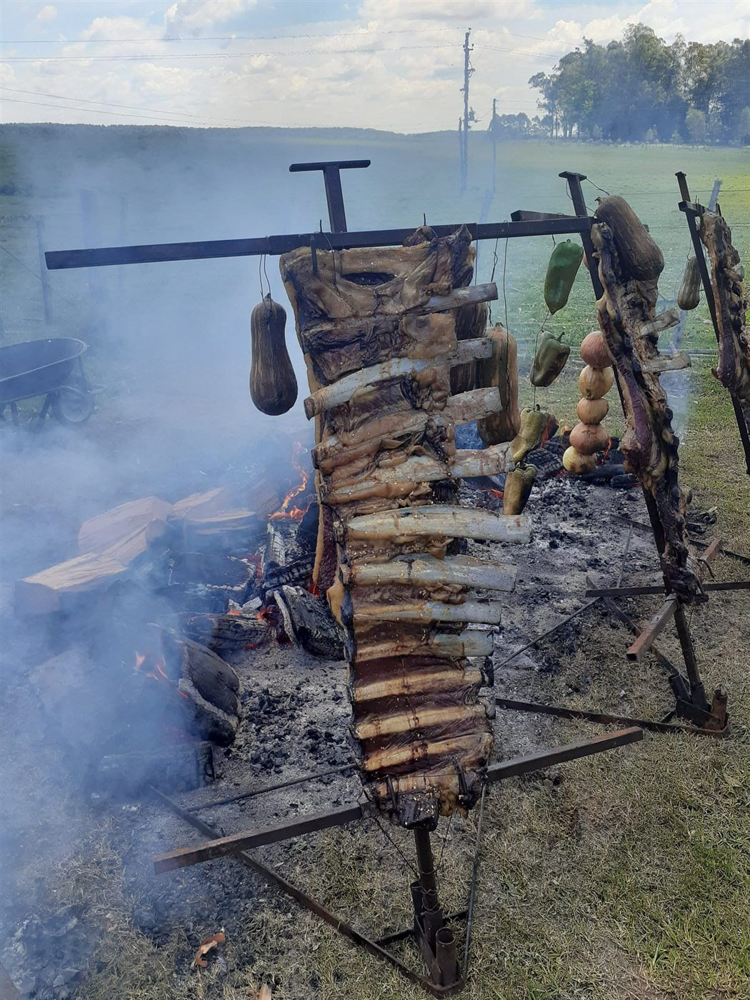
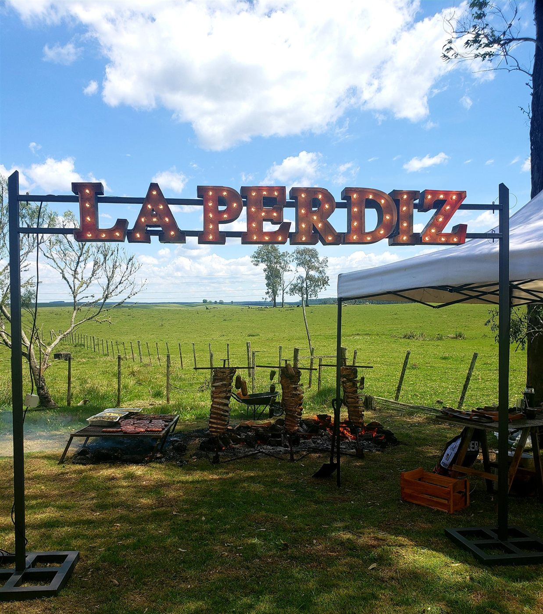
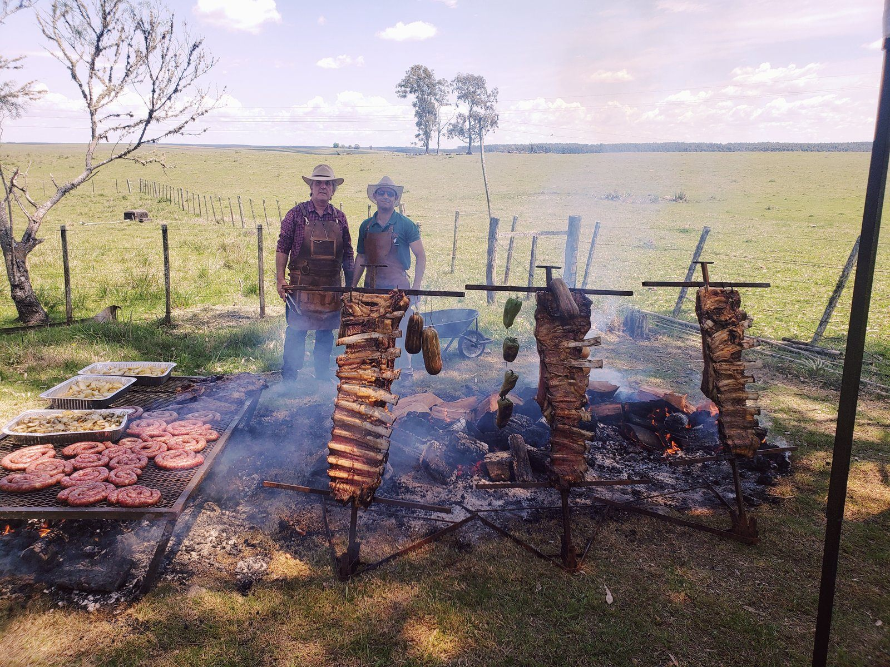
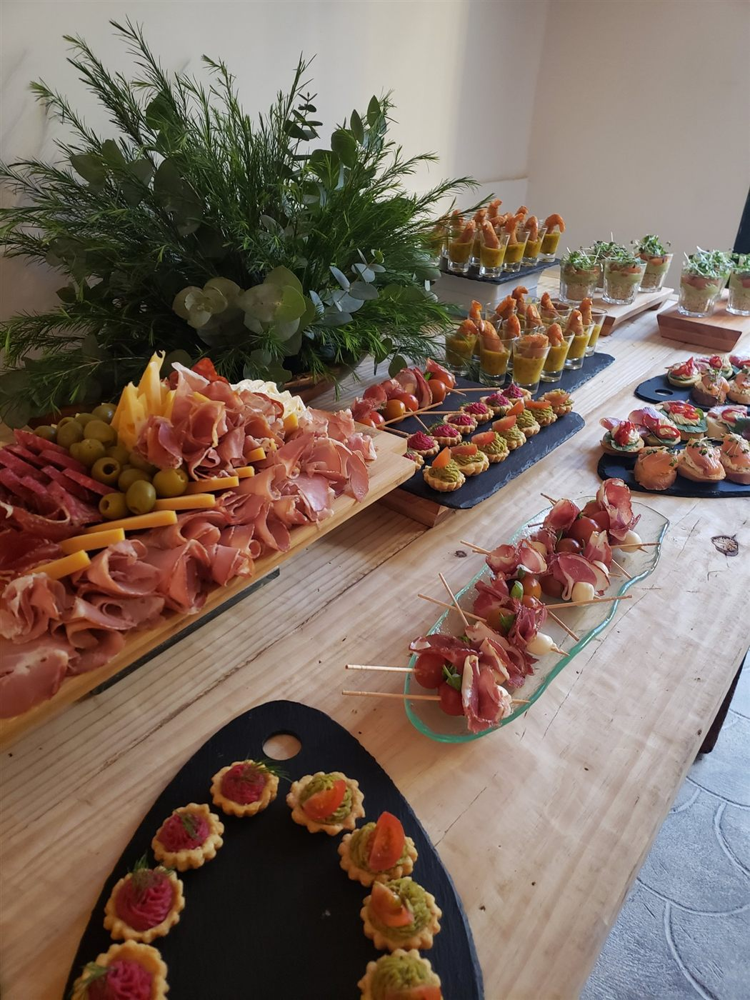
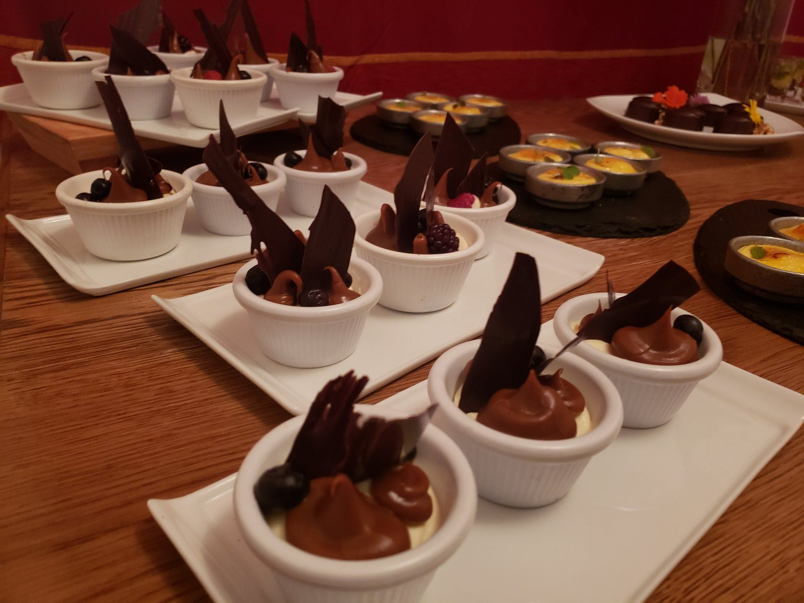
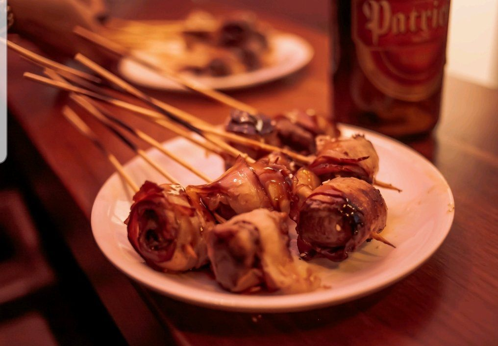
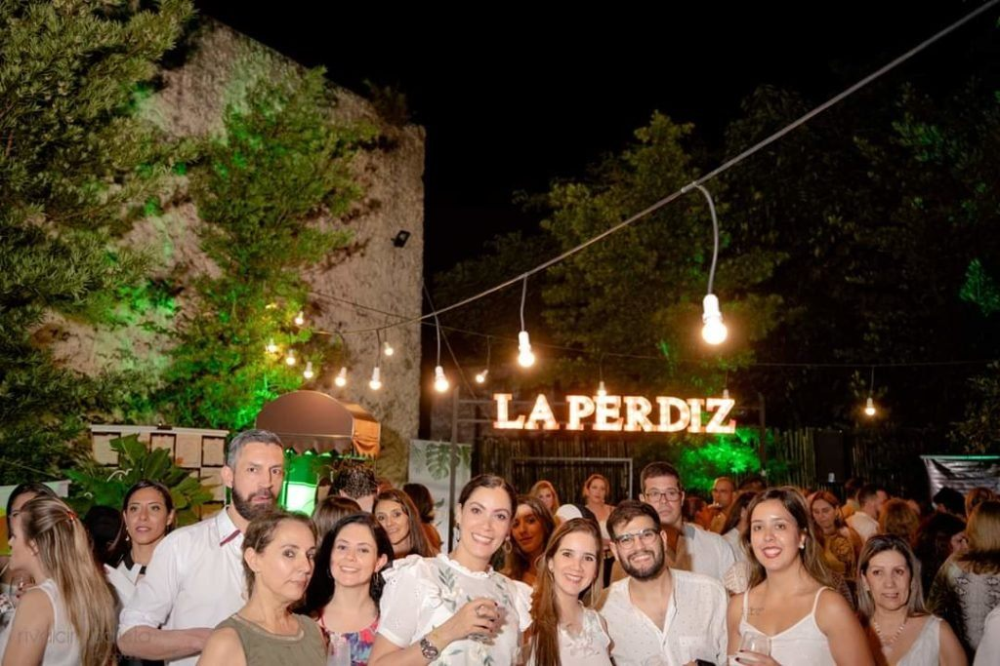
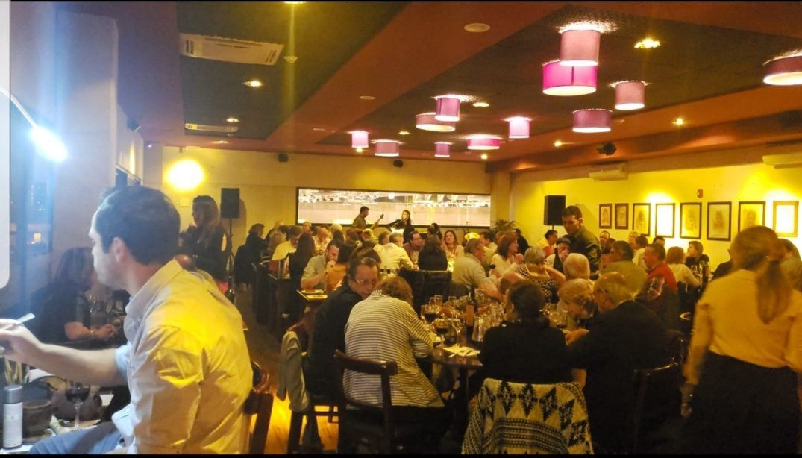
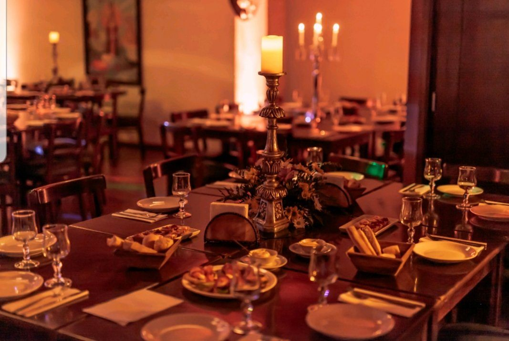

Lo que nos pidieron nuestros clientes
En estos años de trayectoria, nuestra clientela nos fue pidiendo la realización de eventos de todo tipo, sociales y empresariales. Al principio los atendíamos como una actividad complementaria a la del restaurant; hoy es un servicio con identidad propia.
Cocinamos con la misma calidad que en el salón, y nos adaptamos a la cantidad de invitados, al lugar y a lo que quieras servir.
- Eventos socialesCumpleaños, casamientos, aniversarios y reuniones familiares.
- Eventos empresarialesAlmuerzos de trabajo, lanzamientos y fiestas de fin de año.
- Asado en el campoAsado al palo y a la parrilla, con carpas y mesas al aire libre.
- Catering a medidaBocados, tablas de fiambres, brochettes, platos calientes y postres.

Galería
Algunos de nuestros eventos









Contanos tu evento
Escribinos con la fecha, la cantidad de invitados y el lugar, y te armamos una propuesta.